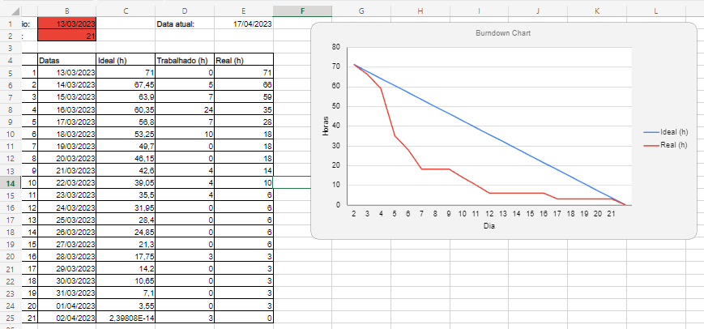

O backlog do produto é uma lista de tudo que precisa ser feito em um projeto. Ele é uma fonte de informação fundamental para a equipe de desenvolvimento, pois orienta o trabalho que deve ser realizado para alcançar as metas do projeto.
Passo a passo para criar o backlog do produto:
● Identifique os objetivos do produto: Antes de criar o backlog, é importante que a equipe de desenvolvimento identifique os objetivos do produto. Isso ajudará a equipe a focar no que é mais importante para o sucesso do projeto.
● Priorize as funcionalidades: A equipe deve listar todas as funcionalidades que precisam ser desenvolvidas no produto e depois priorizá-las com base em sua importância para o cliente e para o sucesso do projeto.
● Crie as histórias de usuário: Para cada funcionalidade, a equipe deve criar histórias de usuário que descrevam as necessidades dos usuários do produto. As histórias de usuário são escritas do ponto de vista do usuário e descrevem o que ele precisa fazer e por que é importante.
● Estime o esforço necessário: Para cada história de usuário, a equipe deve estimar o esforço necessário para implementá-la. Essa estimativa pode ser feita em pontos de história, dias ou horas, dependendo da preferência da equipe.
● Refine e detalhe as histórias de usuário: À medida que a equipe avança no desenvolvimento do produto, é comum que as histórias de usuário precisem ser refinadas e detalhadas. Isso pode incluir a quebra de histórias de usuário maiores em histórias menores e mais gerenciáveis.
● Mantenha o backlog atualizado: O backlog do produto deve ser atualizado regularmente para refletir as mudanças no projeto. Isso inclui a adição de novas funcionalidades e a atualização das estimativas de esforço.
Exemplo de Backlog:
Burndown
O burndown é uma técnica utilizada no método Scrum para acompanhar o progresso de um projeto de desenvolvimento de software. Ele permite que a equipe de desenvolvimento visualize o trabalho que precisa ser realizado e acompanhe o progresso diariamente.
Passo a passo para utilizar o burndown no método Scrum:
● Definir o escopo do projeto: Antes de começar a utilizar o burndown, é importante que a equipe tenha um entendimento claro do que precisa ser entregue no projeto.
● Criar o backlog do produto: A equipe deve criar uma lista com todas as funcionalidades que precisam ser desenvolvidas no projeto. Essa lista é chamada de backlog do produto.
● Priorizar o backlog: A equipe deve priorizar as funcionalidades do backlog do produto com base em critérios como valor para o cliente e complexidade.
● Estimar o esforço: Para cada funcionalidade do backlog, a equipe deve estimar o esforço necessário para concluí-la. Essa estimativa pode ser feita em horas, dias ou pontos de história.
● Criar o burndown chart: Com as estimativas de esforço e a data de entrega do projeto, a equipe pode criar um gráfico burndown que mostra o progresso do projeto ao longo do tempo. Esse gráfico mostra a quantidade de trabalho restante versus o tempo disponível.
● Atualizar o burndown chart diariamente: A cada dia, a equipe deve atualizar o burndown chart com o progresso realizado no dia anterior. Isso permite que a equipe visualize o progresso do projeto e identifique qualquer desvio em relação ao plano original.
● Revisar e ajustar: A equipe deve revisar e ajustar o burndown chart regularmente para garantir que o projeto esteja no caminho certo e que as metas sejam atingidas. Se houver desvios significativos em relação ao plano original, a equipe deve tomar medidas corretivas para corrigir o curso do projeto.
Em resumo, o burndown é uma técnica simples e eficaz para monitorar o progresso do projeto no método Scrum. Ele ajuda a equipe a identificar problemas e desvios em tempo hábil, permitindo que tomem medidas corretivas para manter o projeto no caminho certo.
Exemplo de Burndown:
O gráfico irá refletir o andamento do trabalho, a linha azul seria o desempenho ideal, mas não é necessário que esteja perfeitamente igual.

Na área de data de início até data de término devem ser preenchidos para que o gráfico se edite automaticamente conforme as tarefas vão sendo concluídas.